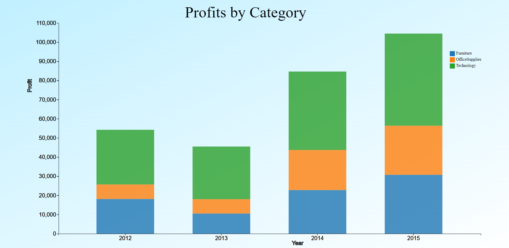

Stacked Column Chart of Profit by Category
Henry’s task involved visualising the monetary contributions of the three categories to the total profits between the years 2012 and 2014. This was represented as a stacked column chart, with each stack representing the profit generated by a category in the particular year, cumulatively creating a bar showing total profits for the particular year. The chart has a legend. Interactivity of the chart involves the stacks enlarging to reveal the value of the stack.